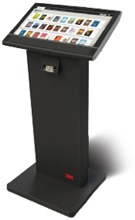
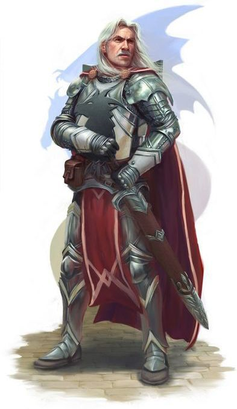

Independence General Store
This program, modeled after a general store in the Oregon Trail video game series, allows the user to add items to a cart and purchase those items. While it might sound uninteresting at first blush, I recommend taking a look if you're a fan of the games.
Library Terminal
A library terminal, where the user can search for a book listed in the library, and check it out if it is available (or return the book if it isn't in).
Create a Character
A basic version of an RPG character creator, this program allows the user to choose between two classes, roll for stats, and choose their weapons and other attributes. Certainly not the not in-depth character creator one has seen, but this one was a lot of fun to make, and I'll be making periodic updates to it.